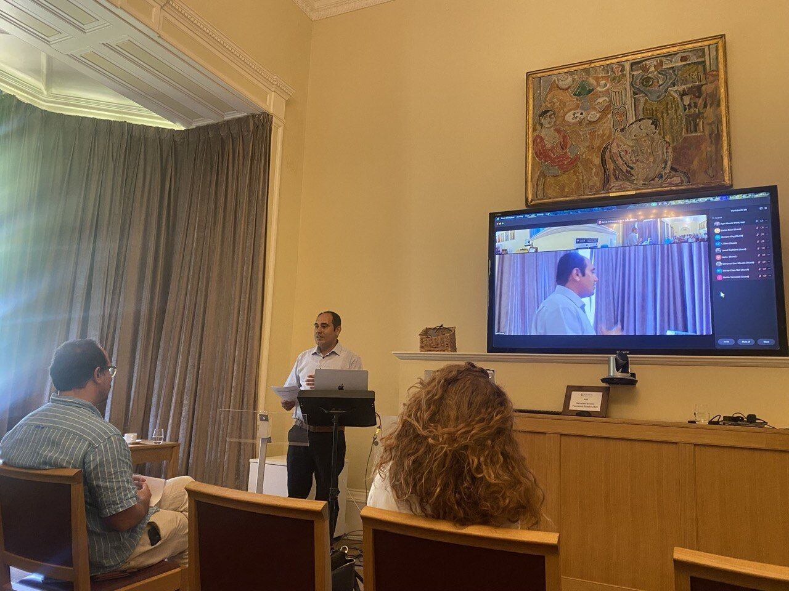
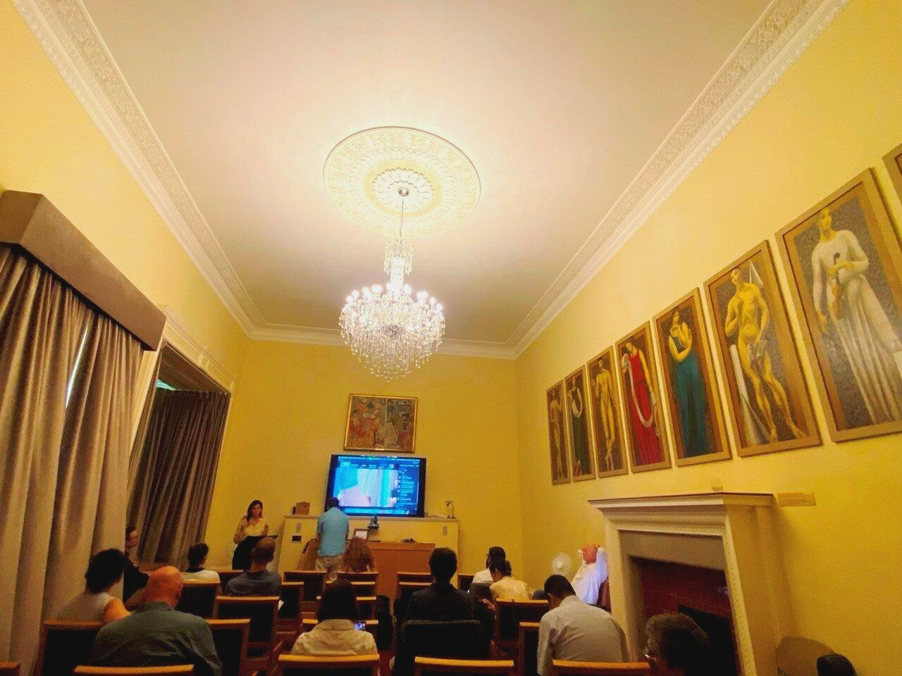

Conferences & Events
Co-organising International Symposium on Hypermedia Warfare, AI, and Law at Cambridge
Dr. Wesam Amer co-organised the Hypermedia Warfare and Techno-Legal Entanglements Symposium at the University of Cambridge, bringing together leading international experts to examine the intersections of media, artificial intelligence, law, and contemporary warfare.
Dr. Wesam Amer played a central co-organising role in the Hypermedia Warfare and Techno-Legal Entanglements Symposium at King's College, University of Cambridge, helping to convene an international gathering of scholars, journalists, legal experts, technologists, and practitioners to explore the evolving relationship between media, artificial intelligence, law, and contemporary conflict. Organised alongside Henning Grosse Ruse-Khan and Ryan Heuser, the symposium provided a unique interdisciplinary platform for examining how emerging technologies are reshaping information environments, accountability mechanisms, and the conduct of warfare in the digital age.
Featuring keynote and plenary contributions from distinguished speakers including Gillian Tett, Balakrishnan Rajagopal, Mohanad Hashim, Neve Gordon, Janine di Giovanni, and Raji Abdul Salam, the symposium addressed issues ranging from hypermedia warfare and algorithmic power to war-crimes documentation, digital manipulation, and the application of international law in conflict settings. Through his leadership and organisational efforts, Dr. Amer helped foster dialogue across media studies, law, technology, human rights, and political science, creating a forum that examined the realities facing conflict-affected societies, including Gaza, Ukraine, and Sudan, while laying the groundwork for continued interdisciplinary research and collaboration.

